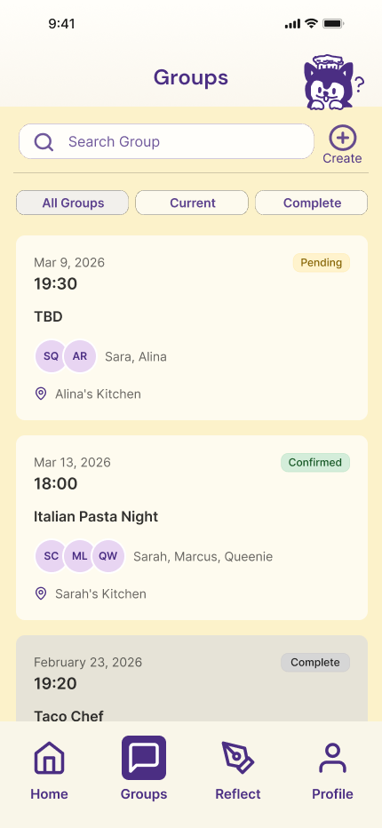
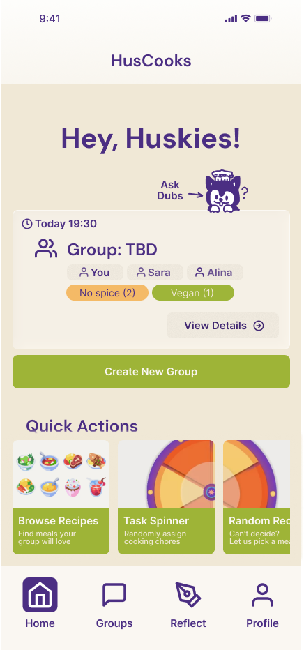
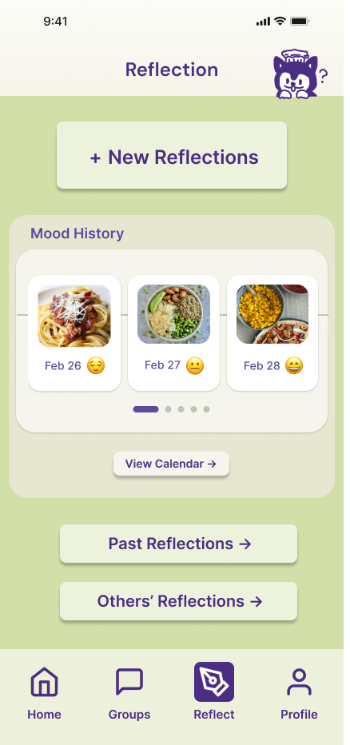

Illustrated by me
Cooking Coordination App
I illustrated this storyboard to explore how students could move from discovering the app to planning a meal, coordinating schedules, dividing tasks, and cooking together.
 ← Back to Work
← Back to Work
01
Making shared cooking easier to coordinate.
HusCooks is a mobile app concept designed to help UW students plan meals and cook with their roommates. From finding a time that works for everyone to dividing cooking tasks and reflecting afterward, the app brings different parts of shared cooking into one place.



I contributed throughout HusCooks’ design process, from user interviews and research synthesis to concept development, Figma prototyping, usability testing, and iteration. I independently illustrated the Cooking Coordination App storyboard and designed the Reflection interface, while collaborating with the team on research, testing, and broader product decisions.
02
We interviewed four UW undergraduates living with roommates to learn about their cooking habits and what made shared meals difficult to organize.
A recurring tension emerged: students liked the idea of cooking together, but cooking alone was often easier. Shared meals required coordinating schedules, deciding what to make, and figuring out who would do what.
Even when roommates wanted to cook together, finding a time that worked for everyone was difficult.
Cooking alone often felt simpler than planning a meal with other people.
Students valued spending time together, but planning and dividing responsibilities could get in the way.
These findings shifted our focus from simply encouraging students to cook together to making shared cooking easier to organize.
How might we help roommates plan and coordinate shared meals without adding more work to their routines?
03
Before moving into interface design, we explored three approaches: a cooking coordination app, a physical mood board, and an in-person cooking class.
Illustrated by me
I illustrated this storyboard to explore how students could move from discovering the app to planning a meal, coordinating schedules, dividing tasks, and cooking together.
Alternative concept
A shared physical tool for communicating schedules and readiness to cook.
Alternative concept
A hands-on approach to practicing cooking, communication, and teamwork.
We moved forward with the app concept because it could support coordination across different schedules and connect the steps before, during, and after cooking.
04
We developed our ideas through low-fidelity sketches and a mid-fidelity Figma prototype, then used concept testing, usability testing, and expert feedback to guide the high-fidelity design.
Two changes became especially important.
Our mid-fidelity prototype included a Chat feature to help roommates communicate about cooking plans.
Before — Mid-fi Chat

After — High-fi Groups
Early feedback raised questions about how visible and accessible Chat should be. But as we reconsidered the feature, we recognized that students already had messaging apps they used regularly.
Rather than building another place to chat, we focused on a problem those tools did not directly solve: organizing a shared cooking session.
In the high-fidelity prototype, Group Scheduling replaced Chat, giving roommates a place to view upcoming sessions, see who was participating, and keep track of their plans.
This was an important shift in our design process. Instead of improving every feature we had proposed, we started questioning whether each one needed to exist.
I designed the Reflection interface to give roommates a way to record and revisit their experiences after cooking together.
Before — Mid-fi Reflection

After — High-fi Reflection
In the mid-fidelity prototype, Mood History was shown as a line chart. However, testing revealed that the mood-history presentation was not clear enough, and later feedback suggested that emojis would be easier to interpret.
In the final design, we moved toward a more visual history using food photos, dates, and mood indicators. The interface also provides access to past reflections and reflections shared by others.
Working on this feature made me think more carefully about how people read personal information. A chart can show change over time, but it may not be the clearest way to remember how a particular experience felt.
05
Our final high-fidelity prototype connects meal discovery, group coordination, cooking activities, and reflection.
The project ended at the prototype stage. While testing helped us improve the interface and reconsider the feature set, we did not measure whether HusCooks changed roommates' cooking habits over time.
HusCooks high-fidelity prototype walkthrough, presented during our in-class gallery walk.
The biggest lesson I took from HusCooks was that iteration is not always about adding or polishing features.
Replacing Chat with Group Scheduling pushed our team to reconsider what problem we were actually solving. Designing Reflection taught me to question whether the way information is displayed matches how people want to use it.
If I continued this project, I would test HusCooks with roommate groups over several cooking sessions to see which features fit naturally into their routines and which still create extra work.